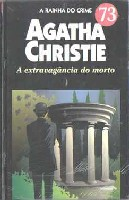

A Extravagância do Morto
Dead Man's Folly
Tão perigoso quanto brincar com fogo é brincar de assassinato, uma vez que esse tipo de brincadeira pode se transformar em uma trágica realidade. A personagem Ariadne Oliver, autora de romances policiais, organiza um jogo na mansão do milionário George Sttubs, uma variante do Caça ao Tesouro, então transformado em Caça ao Assassino. Mas, logo, ela tem a intuição de que um assassino de verdade poderia se aproveitar do jogo para matar alguém. Por isso, convida Hercule Poirot para fazer a entrega dos prêmios. Confirmando as suspeitas de Ariadne, uma vítima de mentira torna-se um cadáver de verdade. Quem terá estrangulado a pobre menina? O infalível Poirot acaba encontrando a resposta para esta e outras perguntas, embora não possa impedir que o assassino mate outras vezes. Afinal, como diz o grande detetive, “o assassinato é um hábito”.